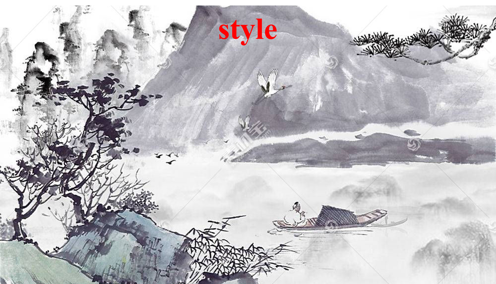

Art Nouveau painting of a female botanist surrounded by exotic plants in a greenhouse.
Visual Conditions Generation (576*320)
The text prompt from the top row to the bottom row. (1) Cyberpunk city. (2) Glittering and translucent fishes swimming in a small bowl with stones, like a glass fish. (3) Mountain river in spring. (4) A robot walking in the field. (5) Lotus flowers, best quality. (6) A swan. (7) A swan.
Original Video
Visual Condition
Generated Video



Visual Conditions Generation (256*256)
We use the test examples presented in Make-Your-Video.
The text prompt from the top row to the bottom row. (1) A dam discharging water. (2) A tiger walks in the forest, photorealistic. (3) A camel walking on the snow field, Miyazaki Hayao anime style. The visual conditions used for generation are: depth, canny, and HED.
Original Video
Text2Video-zero
LVDMExt+Adapter
Make-Your-video
VersVideo-L (Ours)